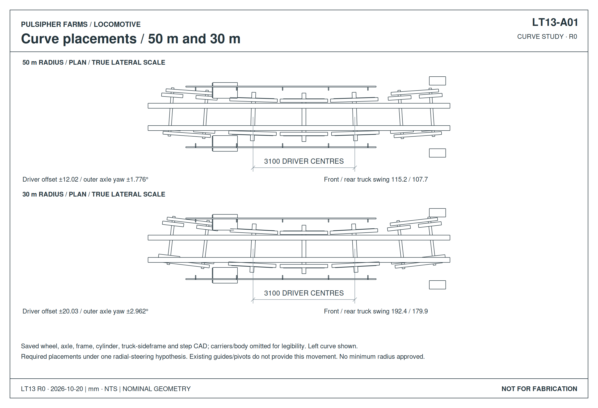
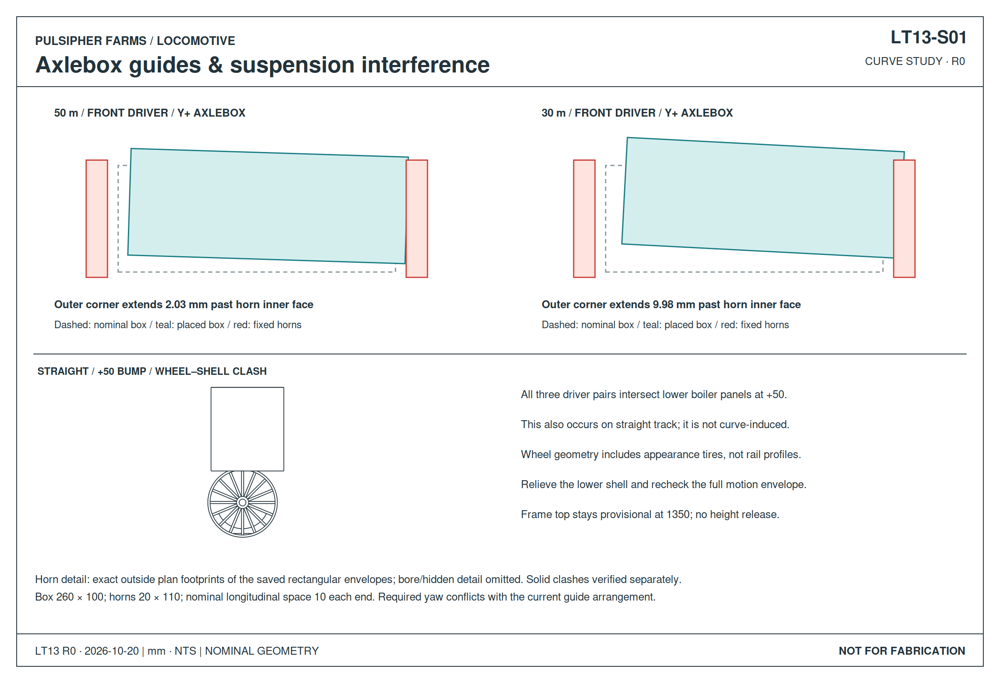
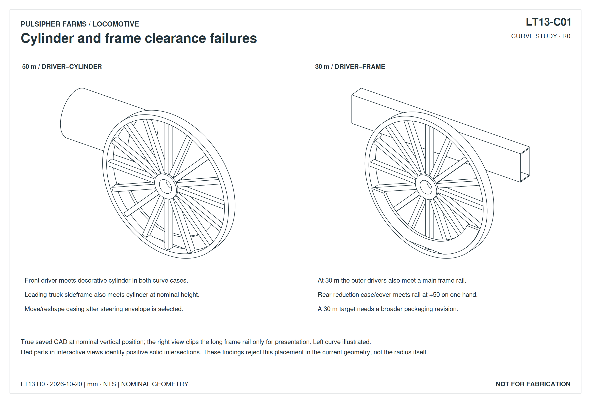

This retained design record predates LT14. Open the current whole locomotive and curve views · Current mounts and hydraulic drawings.
LOCOMOTIVE / LT13
The current locomotive uses the LT16 suspension and parallel sliding-axle candidate. The radial-placement study below is retained for comparison.
Curve clearance
50 m and 30 m radius · Both directions · Suspension positions
Neither curve case clears the current geometry under the tested steering proposal. Retain 50 m as the first redesign target. The 30 m case adds wheel-to-frame and drive-case clashes. A separate wheel-to-boiler clash occurs at +50 mm suspension travel even on straight track.
Clearance drawings
Saved CAD · Nominal mm


Curve CAD / interference views
Loading…Intersecting part IDs for this placement
Proposed steering positions are imposed on the CAD to test space. They are not motion the current guides and pivots can deliver. Red marks colliding parts; hide groups or select and isolate parts to inspect them. Rods, brakes and hoses are unresolved.